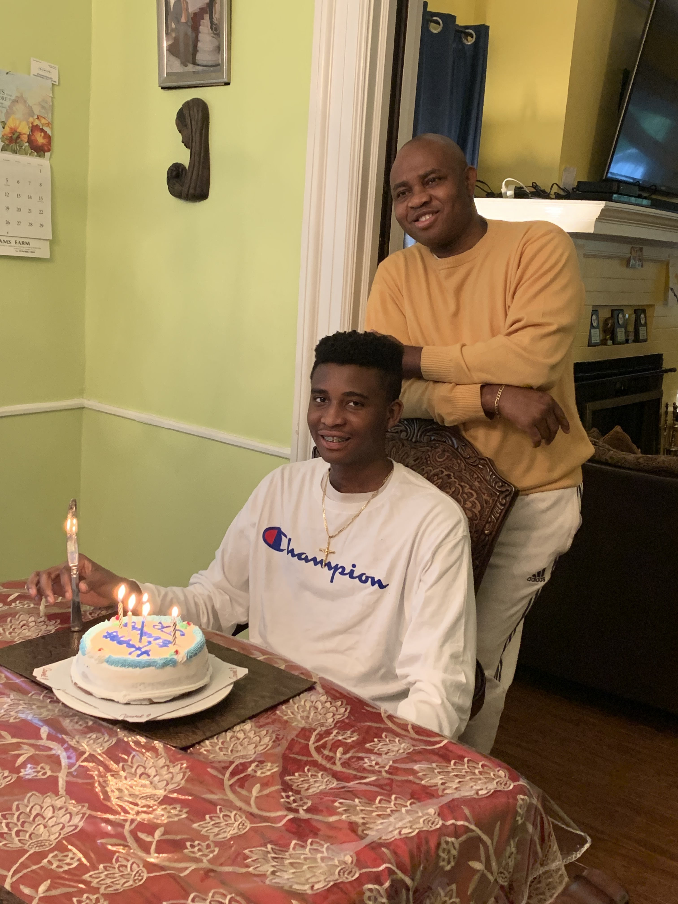
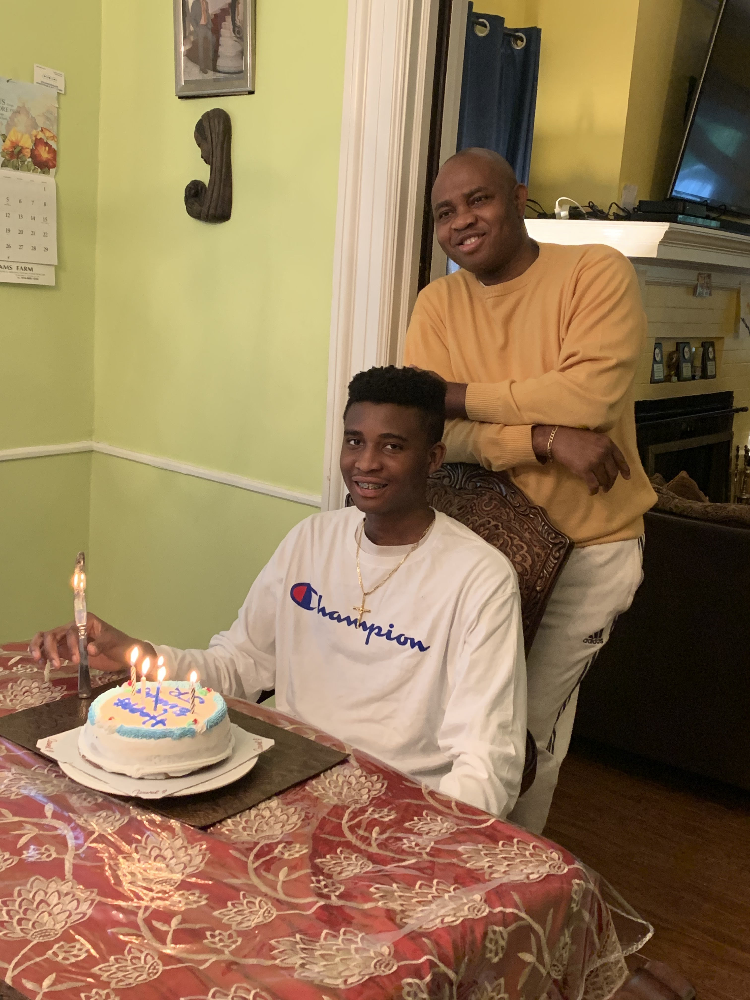
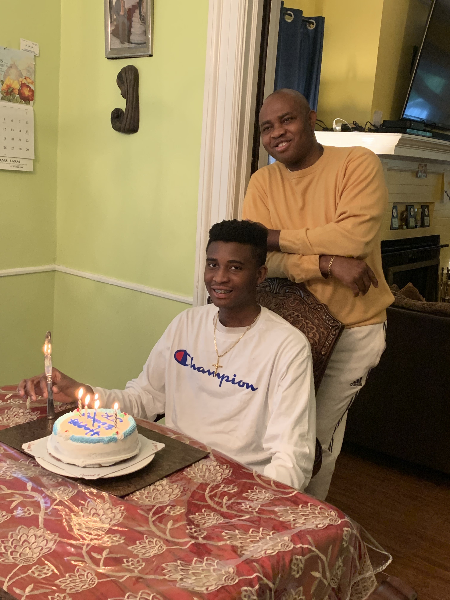

.heic) 

Hello everyone! My name is Emamoke Rogers Jr. and I'm going to be taking you through a journey of myself and my interests. I'm 15 years old and I'm from Yonkers, NY. I'm currently a rising sophomore attending Yonkers High School. Some interesting things about me is that my favorite sport is basketball and I play basketball a lot in my free time. I’m also intrigued by a variety of topics that I feel I can definitely help to positively impact, and some of them I will be putting emphasis on here. Some other things about me is that I like playing video games in my free time as well which in my case can be an outlet for stress that I could be dealing with in my personal life.
One of the profound topics that I take interest in is Computer Science and being able to develop websites, applications, and games as a few examples. I have always been fascinated by how all of the things we utilize, specifically in the technology side of things, are created. I take passion in this great topic of Computer Science because I’ll be having a positive impact on a plethora of people and how they go about their lives which is making it easier because of what technology can do.
Another topic I take great interest in is entrepreneurship and the whole Business side of things. Here, I feel like I’m able to take more of a leadership role in terms of managing how things are run in a business and I feel like I can make a positive impact here as well. I've always been extremely interested to see how businesses are ran since a young age which speaks to why I'm interested in this topic.
